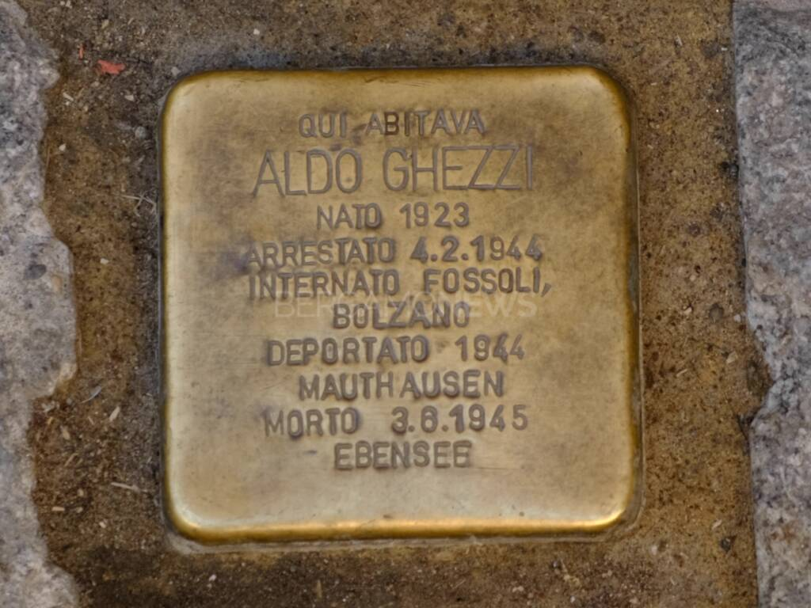

Historical Context
The Stolpersteine (Stumbling Stones) constitute the largest decentralized and participatory monument project in Europe dedicated to the memory of the victims of National Socialism. Conceived by German artist Gunter Demnig in 1992, the initiative responds to a dual context: on one hand, the need for a "bottom-up" memory that follows victims in their living environment; on the other, the historiographical debate of the 1990s aimed at overcoming an anonymous and collective vision of the Holocaust in order to restore centrality to individual biographies.
The project develops during a period of deep European reflection on the duty of memory, following the end of the Cold War. It symbolically opposes Nazi methodology of extermination, which not only physically annihilated people but also systematically erased their identity, replacing it with numbers in concentration and extermination camps. The Stolpersteine, literally "stumbling stones", aim to counter this erasure by reporting name, surname, date of birth, deportation and death (or survival) of Jews, Roma, Sinti, political opponents, homosexuals and Jehovah's Witnesses persecuted.
The spread in Italy, and particularly in Bergamo province starting from 2016, marks a significant milestone in this often tardy and fragmented path toward a diffuse national memory. The initiative inserts itself into this context by filling gaps in collective remembrance and bringing historical reflection directly into public spaces of everyday life in front of victims' homes.
🎧 Audio Reading
Why is it a place of memory
The stumbling stone dedicated to Aldo Ghezzi, like every Stolperstein, transforms the sidewalk in front of the last freely chosen home of the victim into an authentic place of memory. Unlike a celebratory monument placed in an exceptional space (a square or a museum), it is a discreet sign, integrated into the everyday urban fabric. Its strength lies precisely in this integration: it is not intentionally visited, but is "stumbled upon" by chance with one's gaze and thoughts during a walk, generating a symbolic interruption in routine that obliges one to reflect.
The small bronze plaque, reporting the name, essential biographical data and tragic destiny of Aldo Ghezzi, from partisan of the "Garibaldi" Brigade to political deportee in the concentration camp of Ebensee, where he died of starvation, performs a fundamental act of restoration of individual dignity. This gesture opposes radically the dehumanizing logic of the camp, which aimed at anonymous annihilation.
In this way, the Stolperstein generates a memory that is simultaneously intimate and collective. Intimate, because it is linked to a specific person and their lived experience in that precise place; collective, because it transforms the shared public space into a permanent reminder of the extreme consequences of political oppression, racial persecution and ideological hatred. It does not commemorate an abstract event, but the concrete life of an individual, making history tangible and deeply personal for anyone who passes by.
🎧 Audio Reading
Multimedia content

In-depth: Gunter Demnig and the Stolpersteine project
The artist who conceived the stumbling stones is Gunter Demnig, born in Germany in 1947. When he began this project, Demnig was already an established artist, but he felt the need to dedicate his work to the memory of the victims of Nazism and Fascism in Europe, transforming art into an instrument of civic testimony.
The first stumbling stone, in German Stolperstein, was laid in Cologne in 1992 to commemorate the deportation of the Roma and Sinti of the city by the Nazis. On that occasion, an episode occurred that deeply marked Demnig and clarified the meaning of his project: a woman from the neighbourhood, who had lived there during the years of the deportations, told him that Roma or Sinti had never lived in those houses. Those words revealed how easily memory could be erased, ignored or removed. Precisely to counter oblivion, denial and indifference, Demnig decided to continue and expand his work. Since then, he has laid over 75,000 stumbling stones in numerous European countries, more than a thousand of which are in Italy.
Gunter Demnig’s initiative forms part of a broader international commitment to preserving the memory of the victims of twentieth-century totalitarian regimes, but it also represents a genuine work of widespread art. Each stone is part of a unified project: it is marked on official maps and must meet precise criteria, maintaining coherence and uniqueness. The Stolpersteine commemorate exclusively the victims of Nazi-Fascism.
The stumbling stones are small square blocks of stone covered with brass, placed in front of the homes where people later deported and killed in extermination camps once lived. Each stone bears the victim’s name and surname, date of birth, date of deportation and, when known, date of death. Jews, Roma and Sinti, political opponents, homosexuals, Jehovah’s Witnesses and people with disabilities: all categories persecuted by Nazism find a place in this project of memory.
The Stolpersteine thus represent a unique phenomenon in the European landscape of remembrance: a widespread artistic project that makes everyday life its stage and the individual life its subject. They do not celebrate events or heroes in dedicated spaces, but silently weave a fabric of personal memories into the asphalt of our cities. In this way, they transform every pavement into a place of ethical reflection and make memory not only a collective experience, but a profoundly personal one for every passer-by who encounters it.
🎧 Audio Reading
In-depth: the Stolpersteine by Gunter Demnig in Bergamo
Map of memory: the spread of Stolpersteine
The Stolpersteine project has created a European network of memory. Here is an overview of its spread, with a particular focus on Italy and Lombardy.
Panorama Europe (data updated to 2024)
Countries with the highest number of Stolpersteine:
- Germany: Over 75,000 stones (the country of origin of the project)
- Netherlands: Over 9,000 stones
- Austria: Over 7,500 stones
- Czech Republic: Over 5,000 stones
- Italy: Over 1,500 stones (diffusion in progress)
Distribution in Italy (main cities)
In Italy, the first stones were laid in Rome in 2010. Since then, the project has spread to numerous cities.
| City | Region | First Placement | Estimated Number | Notes |
|---|---|---|---|---|
| Rome | Lazio | 2010 | 249 (in 2018) | First Italian city to adopt the project |
| Milan | Lombardy | 2017 | 171 (in 2023) | Project coordinated by the City and the Jewish Community |
| Turin | Piedmont | 2015 | 159 (in 2025) | Initiative of the Museum of the Resistance |
| Venice | Veneto | 2014 | 210 (in 2026) | Includes the islands of the lagoon |
| Genoa | Liguria | 2013 | 25 (in 2024) | Project supported by ANED |
| Bergamo | Lombardy | 2016 | 21 (in 2023) | Among these, the one dedicated to Aldo Ghezzi |
| Bologna | Emilia-Romagna | 2017 | 15 (in 2020) | "Pietre d'Inciampo Bologna" project |
| Florence | Tuscany | 2013 | 56 (in 2025) | Initiative of the Deportation Museum |
Note on the data: The figures are indicative and constantly evolving, as new stones are laid every year, especially on Holocaust Remembrance Day and other commemorations. The main sources for these data are the official Stolpersteine website and Italian local coordination groups.
🎧 Audio Reading
Sources
Bibliographical and documentary sources
- Official Stolpersteine project website. Consulted for the definition of the project, installation criteria and information on the artist. [stolpersteine.eu]
- United States Holocaust Memorial Museum (USHMM). Consulted for the historical context of Nazi persecution and terminology. [ushmm.org]
- Foundation for Contemporary Jewish Documentation (CDEC). Consulted for the context of the Shoah in Italy. [cdec.it]
- Pelliccioli, Mario. Itineraries of Memory. 2023.
City installation data
- Venice and province: Data updated to 2024 from the Venice Stolpersteine Committee. [PDF ufficiale]
- Rome: Complete documentation of installations in the capital (updated to 2020). [Guida PDF]
- Milan: In-depth analysis with data updated to 2024 on Milanese installations. [Sky TG24]
- Bergamo e province: Complete list updated to January 2023 with addresses and biographies. [Cose di Bergamo]
- Turin: Official data from the Diffused Museum of the Resistance, city project coordinator. [Museo Diffuso Torino]
- Bologna: Open dataset released by the Municipality of Bologna (not recently updated). [Dati aperti Comune]
- Florence: Official page of the Culture Office of the Municipality of Florence with the complete list. [Comune di Firenze]
- Genoa: Interactive map and official notice from the Municipality of Genoa (updated to 2023). [Comune di Genova]
Methodological notes
- The counts are based on official sources available at the time of consultation.
- The number of Stolpersteine may increase annually, especially on Holocaust Remembrance Day (27 January).
Iconographic sources
- Photograph of the Stolperstein dedicated to Aldo Ghezzi in Bergamo. Image taken from the article "The anti-monument that invites remembrance: the Stolpersteine in Bergamo" (BergamoNews, 27/01/2024).
Multimedia sources
- Documentary video on the Stolpersteine project in Bergamo. The anti-monument that invites remembrance: the Stolpersteine by Gunter Demnig in Bergamo. [Go to the video]